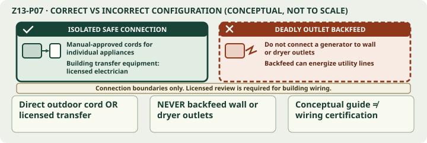

Z13-P07 · Home survival and utilities · New manuscript
Isolate generator circuits properly and never backfeed a wall outlet
Prevent utility-worker electrocution and residential electrical fires by enforcing strict electrical isolation between generators and house wiring.
When it applies · Connecting portable generators to essential residential appliances or home electrical panels.
Equipment · Heavy-duty outdoor-rated grounded cords (plugging appliances directly) OR a code-compliant transfer switch installed by a licensed electrician.

Actions
- Connect household appliances safely in ONLY one of two ways: plug individual appliances directly into the generator via intact heavy-duty outdoor-rated grounded cords, OR connect through a properly permitted transfer switch installed by a licensed electrician.[U02]
- NEVER plug a portable generator into a home wall outlet, laundry dryer outlet, or range receptacle using a double-male cord ("backfeeding" or "suicide cord")—backfeeding energizes exterior utility lines to deadly thousands of volts, killing utility linemen and bypassing breaker fire protection.[U02]
- Treat conceptual generator diagrams in this encyclopedia strictly as safety-boundary references—NEVER as wiring installation instructions; all panel transfer switches and interlocks require licensed electricians and local electrical permits.[U02, ED]
Failure recognition · Fabricating a double-male cord to backfeed a dryer outlet during a blackout, electrocuting a line worker repairing a pole down the street.[U02]
Verify · Confirm appliances run either on direct outdoor cords within rated watts or through a licensed, inspected transfer switch.[U02]
Stop or change course · Any DIY panel tie-in, warm cord, tripped GFCI, or exposed live male prongs requires immediate shutdown and licensed electrical review.[U02]
Evidence and editorial notes
- U02 · FEMA / Ready.gov · Power Outages (current web edition)
- Section: Power Outages > Portable Generator Safe Connection and Isolation · Conditions: Homeowners using portable generators during electrical outages
Support: Run generators only outdoors at least 20 feet from doors, windows, and vents; plug appliances directly into heavy-duty outdoor-rated cords OR use a licensed-electrician-installed transfer switch—never backfeed into a wall outlet.
Limitations: Backfeeding energizes utility lines, risking electrocution of utility linemen and household electrical fires. · Conflicting evidence: Directly counters deadly "suicide cord" backfeeding myths.
Editorial note: Core electrical isolation boundary across Z13 generator cards. · Specialist reviewer: Licensed electrician and fire safety
Primary source · checked 2026-11-24
Source lineage · FEMA Ready.gov Power Outages and CPSC; new manuscript · Classification · New manuscript.